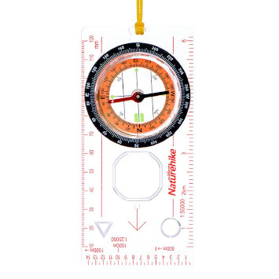
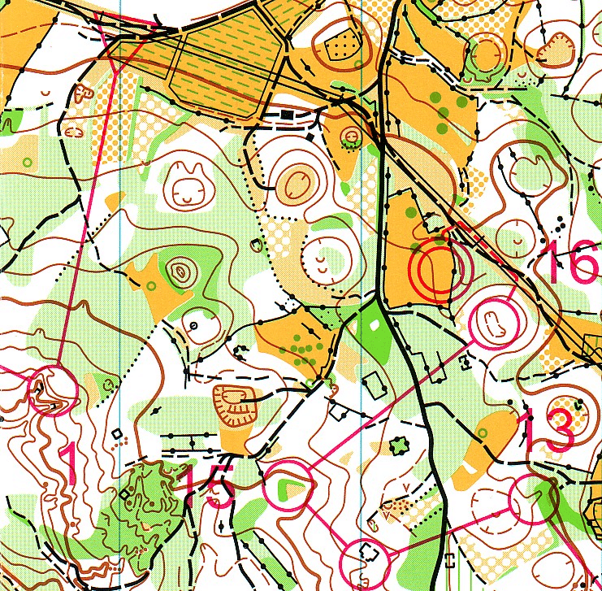

Оријентиринг је спорт где такмичар(ка) треба уз помоћ карте и компаса да за најкраће могуће време пронађе на терену одређени број контролних тачака (контрола) и то оним редоследом како је нацртано на карти.
Дакле, за разлику од атлетског кроса где се трчање у природи изводи на обележеној стази одређене дужине, у оријентирингу се такмичари крећу по непознатом терену (стази), а да би то могли, користе се помоћним реквизитима: специјалном картом тог терена и компасом. Из тога проистиче и основни задатак у оријентирингу.
Такмичари се дакле, уз помоћ карте и компаса, крећу непознатим тереном, а њихова задата стаза и контролне тачке које на терену треба да пронађу, уцртане су на карти. У сваком тренутку такмичари морају знати где се налазе, и наравно на основу свог знања искуства у читању карте, да донесу одлуку о томе којим правцем ће се кретати како би најбрже обишли целу стазу и пронашли све контролне тачке.
Знате како каже народна пословица: “Преко прече – наоколо ближе”. Е управо тако је често и у оријентирингу. Некада је брже ако се брдо обиђе, него да се иде преко њега. Tакве и много компликованије одлуке сваког тренутка доносе такмичари у оријентирингу. У томе је чар овог спорта.
Такође, може се рећи да је оријентиринг прави спорт за све. Може се упражњавати рекреативно и такмичарски. Такмичарске категорије су од 10 година па све до 65 и више. То је и породичан спорт јер се њиме могу истовремено бавити све генерације.
И још нешто, јако важно! Оријентиринг није скуп спорт. Од опреме Вам је потребан компас и опрема за трчање у природи.